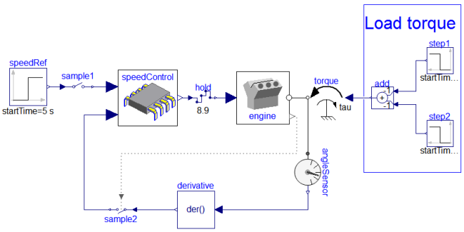
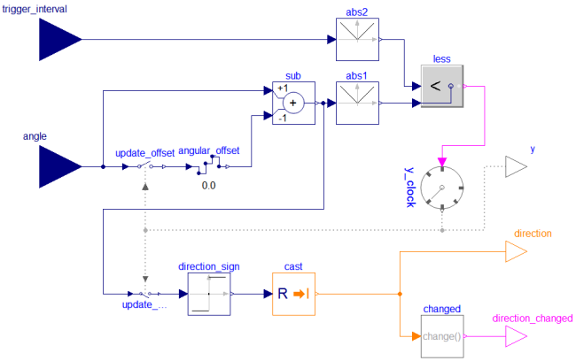
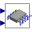
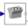
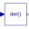

EngineThrottleControlClosed-loop throttle control synchronized to the crankshaft angle of an internal combustion engine |
|
Diagram
{kind=link}
Information
This information is part of the Modelica Standard Library maintained by the Modelica Association.
This example shows how to model a non-periodic synchronous sampled data systems
with the Modelica.Clocked library. This is demonstrated at hand
of a closed-loop throttle control synchronized to the crankshaft angle of an
internal combustion engine. This system has the following properties:
- The engine speed is regulated with a throttle actuator.
- Controller execution is synchronized with the engine crankshaft angle.
- The influence of disturbances, such as a change in load torque, is reduced.
The complete system is shown in the figure below (diagram-layer):

Block speedControl is the discrete control system. The boundaries
of this controller are defined by sample1, sample2 and
hold. The sampling is done in terms of sensors within the engine
which observe its crankshaft angle; every 180° rotation of the crankshaft, the engine
internally synchronizes is throttles. The respective synchronization points are provided
as clocked outputs that in turn are used to trigger the external controller. The speed
controller therefore is automatically executed every half-rotation of the engine's
crankshaft in sync with the engine's internal throttle-cycle. The following diagram
illustrates the engine's respective internal setup:
The crankshaftPositionEvent-clock is the event-clock synchronizing the
engine's internal throttle-cycle and external control. It produces a clock tick for
every half-rotation and is implemented as
RotationalClock.
The following diagram illustrates the logic of such a rotational clock:

It accounts the angular of the last time a rotation has been
recognized (angular_offset). Given
angular_offset, the event-condition for rotations is:
abs(angle - angular_offset) >= abs(trigger_interval)
In our case, angle is the position of the crankshaft of the engine and
trigger_interval is 180°. In the end,
crankshaftPositionEvent samples it's own input angle to account
an offset used to decide when to tick; the clock's event condition depends on
the state present when the condition changed last time from being non-satisfied
to being satisfied, i.e., the state when the clock last ticked.
This example model is based on the following references:
- Crossley, P.R. and Cook, J. (1991):
- A nonlinear engine model for drivetrain system development.
International Conference on Control, Edinburgh, UK, March.
- Simulink® (R2010b) demo model
sldemo_enginewc.mdl: - Engine Timing Model with Closed Loop Control.
The
EngineThrottleControlexample uses the same parameter values as thesldemo_enginewc.mdldemo model which is shipped with the Simulink® software developed by The MathWorks, Inc. Hence, the simulation results of these models can be compared conveniently.
Components (12)
| speedRef |
Type: Step |
|
|---|---|---|
|  | speedControl |
Type: SpeedControl |
| sample1 |
Type: Sample |
|
| hold1 |
Type: Hold |
|
|  | engine |
Type: Engine |
| step1 |
Type: Step |
|
| step2 |
Type: Step |
|
| add |
Type: Add |
|
| torque |
Type: Torque |
|
| angleSensor |
Type: AngleSensor |
|
|  | derivative |
Type: Der |
| sample2 |
Type: SampleClocked |